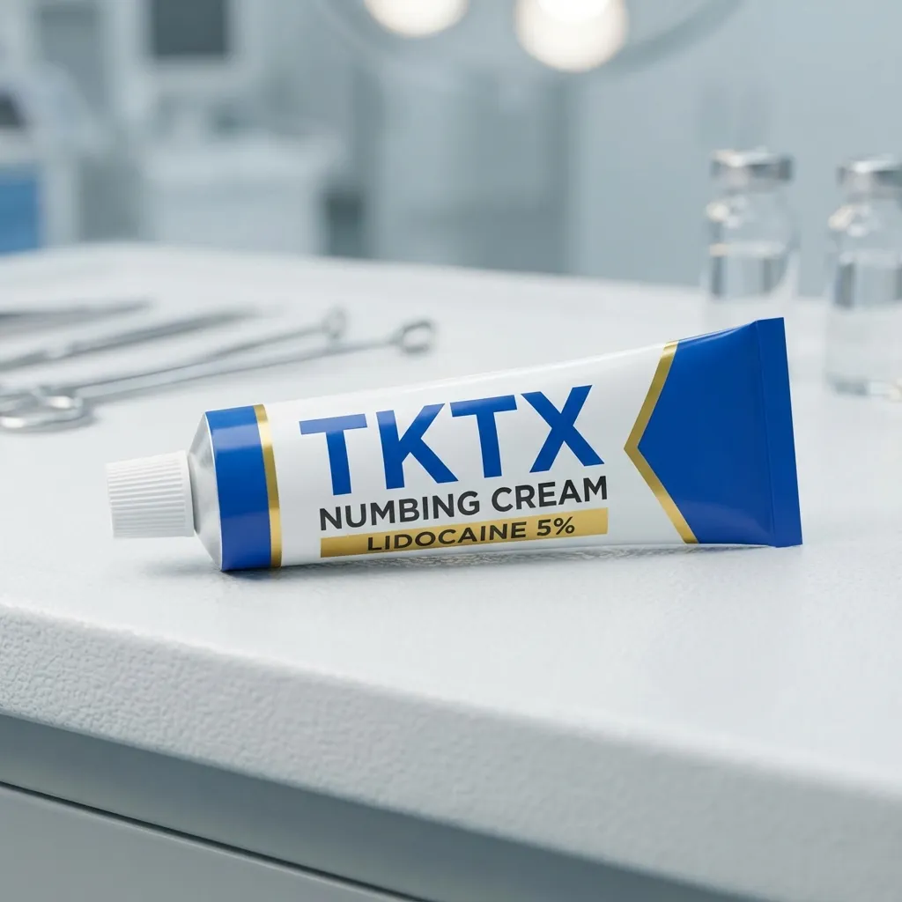
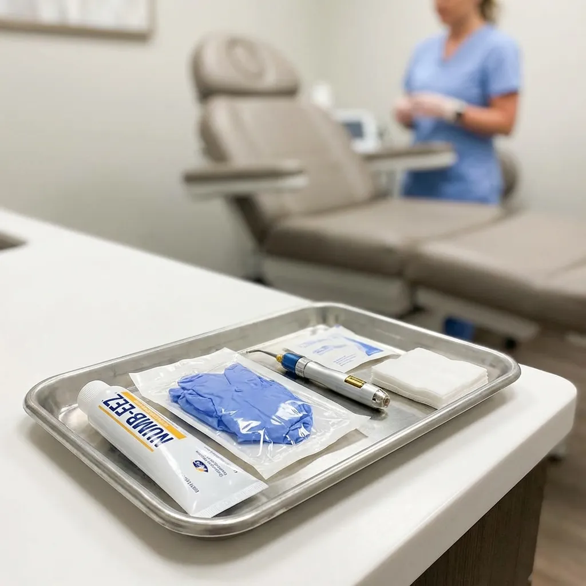
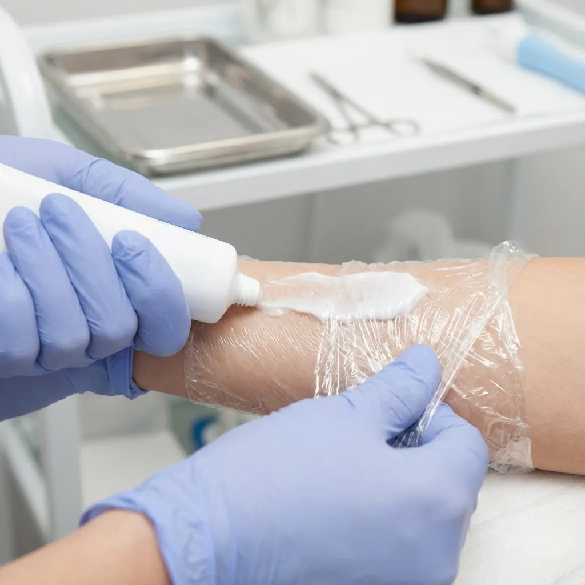

TKTX: Crema Anestésica Tópica
La crema TKTX es un producto anestésico tópico que ha ganado popularidad en los últimos años, especialmente en el ámbito de la medicina estética y los procedimientos cosméticos. Este tipo de crema contiene anestésicos locales que adormecen temporalmente la piel, reduciendo la sensación de dolor durante diversos tratamientos.

¿Qué es TKTX?
TKTX es una crema anestésica formulada con una combinación de ingredientes activos como lidocaína, prilocaína y otros anestésicos locales. Su función principal es proporcionar alivio temporal del dolor superficial en la piel, permitiendo que procedimientos como tatuajes, depilación láser, microblading y otros tratamientos estéticos sean más cómodos para el paciente.
Composición y Mecanismo de Acción
Los ingredientes activos en TKTX trabajan bloqueando los canales de sodio en las terminaciones nerviosas de la piel. Este mecanismo impide temporalmente que las señales de dolor se transmitan al cerebro, creando una sensación de entumecimiento en el área de aplicación. La concentración de anestésicos puede variar según la formulación específica del producto.
Usos Comunes
La crema TKTX se utiliza principalmente en procedimientos estéticos y cosméticos que pueden causar molestias, incluyendo:
- Tatuajes: Reduce el dolor durante sesiones largas de tatuado
- Depilación láser: Minimiza las molestias del tratamiento
- Microblading: Hace más confortable el procedimiento de cejas
- Piercing: Disminuye el dolor durante la perforación
- Tratamientos dermatológicos: Facilita procedimientos menores en la piel

Aplicación y Consideraciones de Seguridad
Para utilizar TKTX de manera efectiva, se debe aplicar una capa generosa sobre la piel limpia y seca, cubriendo con film transparente para potenciar su absorción. Generalmente, el efecto anestésico comienza a manifestarse entre 20 y 40 minutos después de la aplicación.

Es fundamental seguir las instrucciones del fabricante y consultar con un profesional de la salud antes de usar cualquier producto anestésico. Las personas con alergias a anestésicos locales, problemas cardíacos o mujeres embarazadas deben tener especial precaución y consultar a su médico antes del uso.
Alternativas Naturales para el Cuidado de la Piel
Si bien TKTX es efectivo para procedimientos específicos, para el cuidado diario de la piel existen opciones más naturales. Por ejemplo, las cremas con veneno de abeja ofrecen beneficios antiinflamatorios naturales, y para el cuidado articular, productos como Hondrofrost proporcionan alivio con ingredientes de origen natural.
💚 Encuentra TKTX en Amazon
Si estás considerando adquirir crema TKTX para un procedimiento estético próximo, puedes encontrar opciones de calidad en Amazon.
Ver TKTX en Amazon →